O pacientă refuzată la alte clinici
Avea nevoie de implanturi zigomatice și pterigoidiene. Prețul a rămas cel fix, 2.900 € pe arcadă.
Reabilitare totală pe implanturi
Cu Dr. Vadim Lazari, chirurg implantolog și fondatorul Centrului Implantologic Chișinău — peste 5.000 de implanturi și 1.000 de reabilitări totale.
Dr. Lazari explică, în mai puțin de un minut și jumătate, cum decurge tratamentul.
Alege situația care ți se potrivește — îți spunem la telefon ce se poate face în cazul tău.
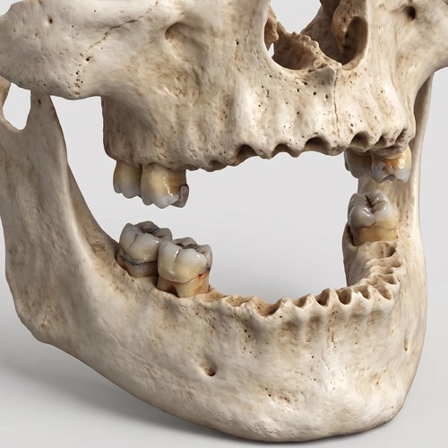
Ți-au căzut toți dinții Se poate și fără niciun dinte. Chiar și când ți s-a spus că nu ai destul os. Vreau să aflu ce se poate →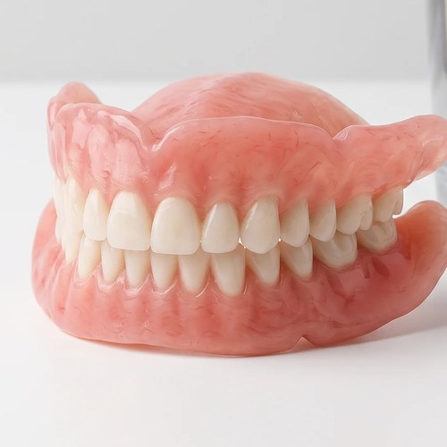
Folosești proteză mobilă Nu o mai scoți seara, nu se mai mișcă când mănânci sau vorbești. Vreau să aflu ce se poate →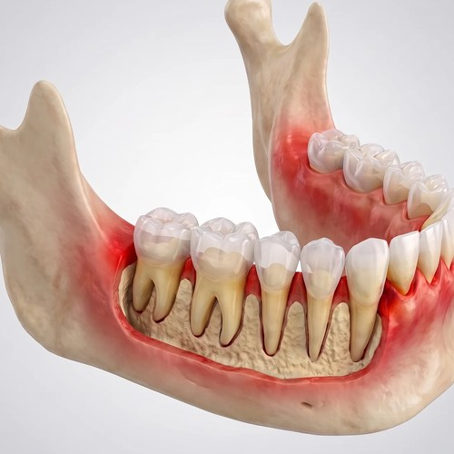
Ai mulți dinți lipsă și boală parodontală Dinții care se mișcă și nu mai pot fi salvați se înlocuiesc cu dinți ficși. Vreau să aflu ce se poate →Doar pacienți reali ai clinicii. Trage de bara din mijloc ca să vezi diferența.
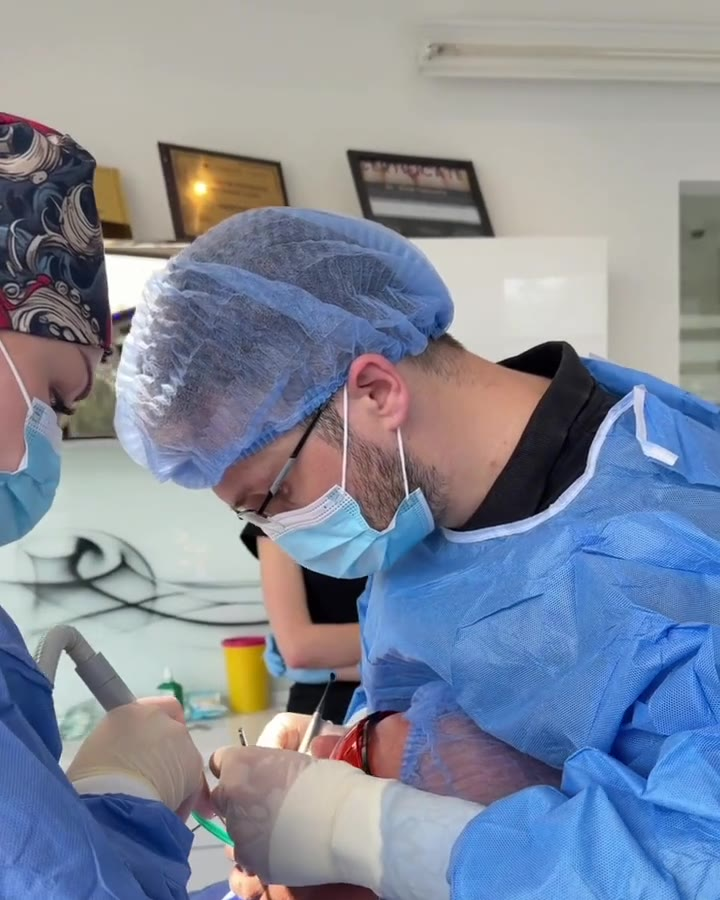
Fără grabă, fără surprize
2.900 € pe arcadă. Același preț, oricâte implanturi sunt necesare.
Vii fără dinți sau cu proteză mobilă și pleci cu dinți ficși.
La reabilitarea totală. O garanție pe care o respectăm în fapt, nu doar pe hârtie.
Până la 12 rate, cu 0% dobândă. Plătești treptat, după bugetul tău.
Dr. Lazari povestește trei cazuri rezolvate la clinică.
Avea nevoie de implanturi zigomatice și pterigoidiene. Prețul a rămas cel fix, 2.900 € pe arcadă.
La aproximativ 2 ani după tratament, două implanturi au trebuit refăcute. Pacientul n-a plătit nimic în plus.
A primit dinți provizorii imediat, iar pe cei definitivi în aproximativ un an, plătind în rate.
Măr, carne, nuci. Dinții stau fix, ca ai tăi, și nu mai alegi mâncarea după proteză.
Mâncarea mestecată bine e digerată mai ușor. Stomacul simte diferența.
Râzi în poze, vorbești liber la masă, la nunți, cu nepoții. Fără mâna la gură.
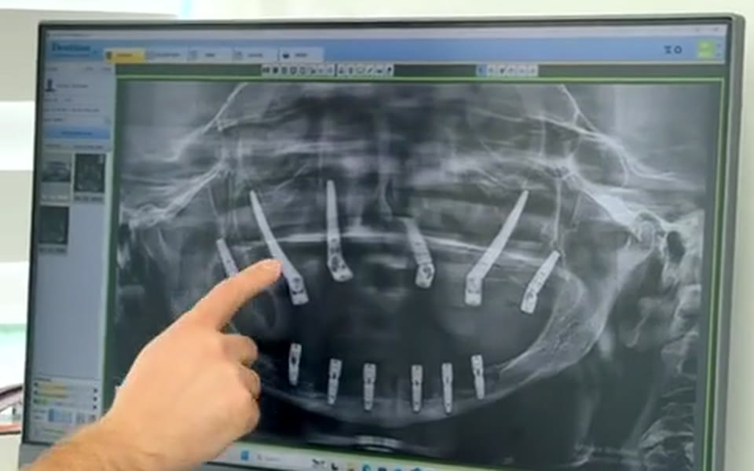
1Tomografie 3D, scanare intraorală și discuția cu medicul chirurg. Pleci cu planul scris și prețul fix.
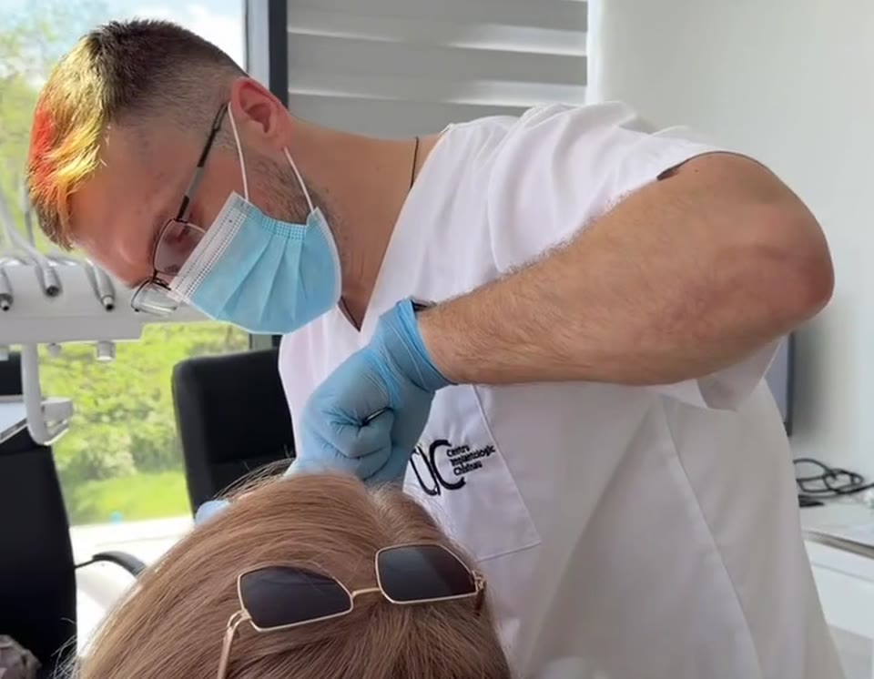
2Se pun implanturile și, în 4 zile, primești dinți ficși provizorii. Nu rămâi nicio zi fără dinți.
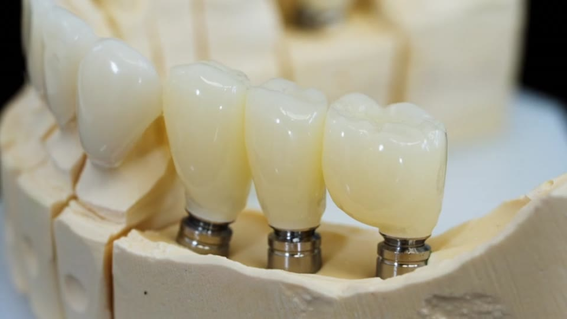
3După ce implanturile s-au integrat în os, se montează dinții definitivi. Medicul îți spune termenul exact la consultație.
Pe scurt, fără termeni complicați
La reabilitarea totală nu se pune câte un implant pentru fiecare dinte. Pe minimum 6 implanturi se fixează o arcadă întreagă de dinți.
Formare continuă, exact pe ce facem zilnic: reabilitări totale pe implanturi, inclusiv fără grefă osoasă.
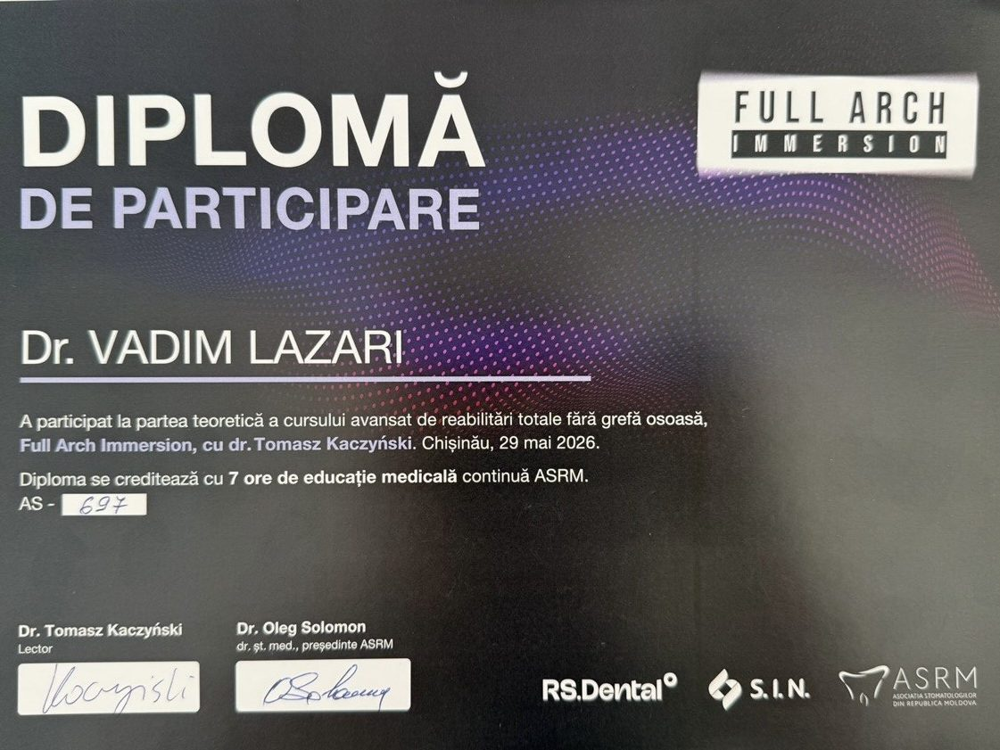
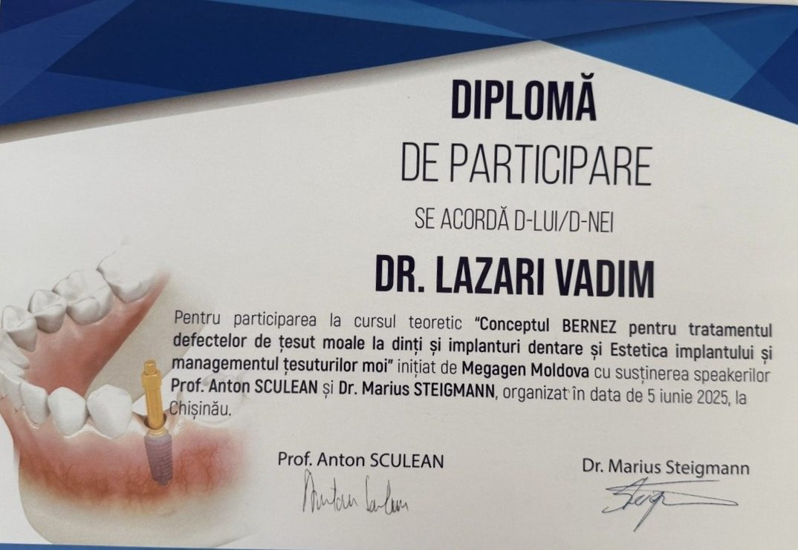
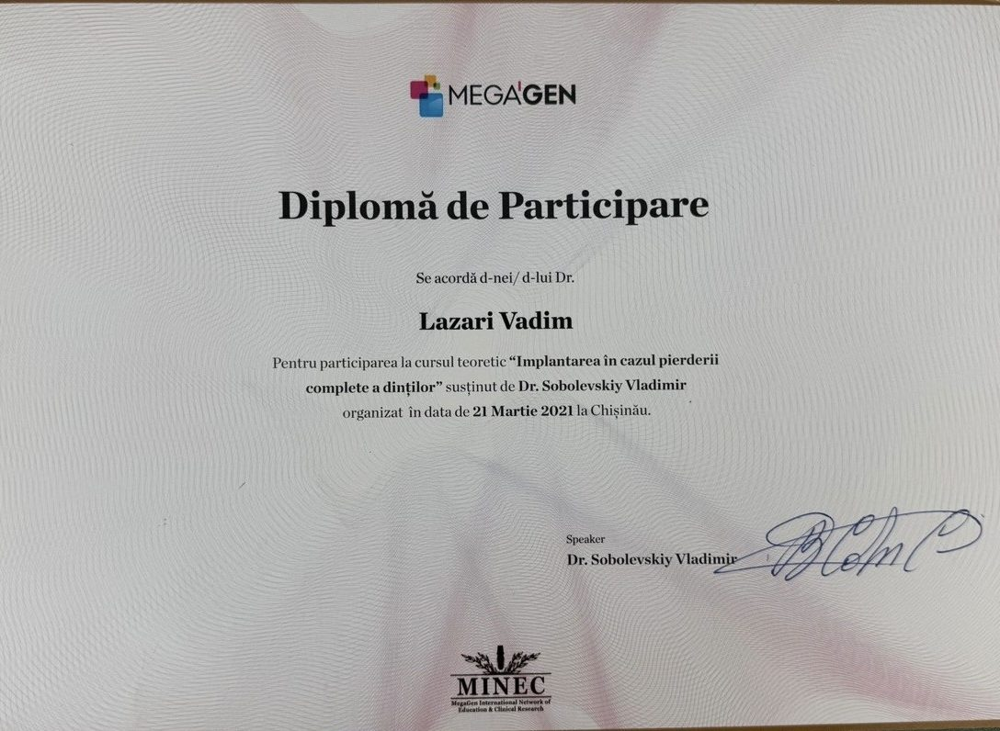
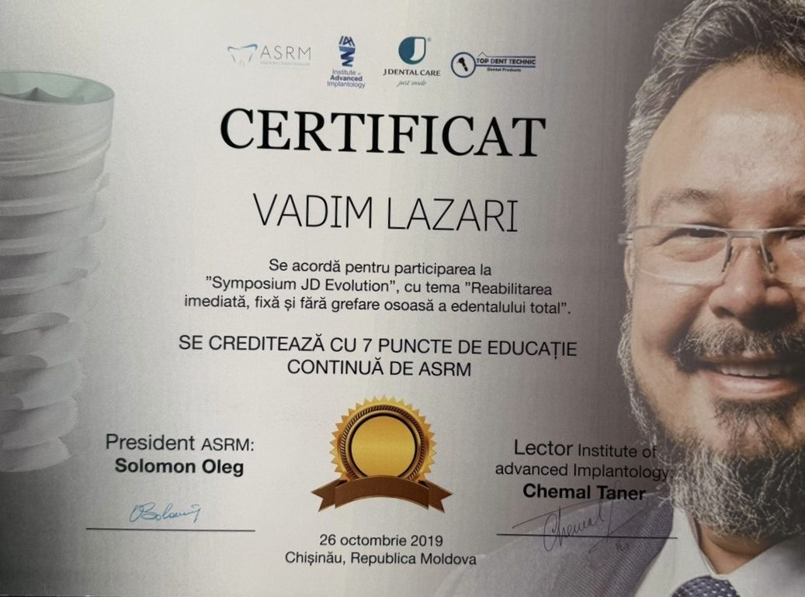
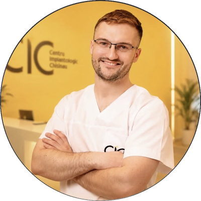
Medicul care te tratează
Chirurg implantolog, fondatorul Centrului Implantologic Chișinău
Face un singur lucru, în fiecare zi: reabilitări totale pe implanturi. Inclusiv cazurile grele, cu os puțin, unde e nevoie de implanturi zigomatice sau pterigoidiene.
În implantologie, prețul final se formează de obicei din mai multe componente — brandul implantului, numărul de implanturi, manopera, materialele — și se află abia la consultație.
Noi am eliminat această complexitate. Un singur preț fix — 2.900 €, îl știi din prima zi, indiferent de complexitatea cazului.
Preț fix, indiferent de complexitate
2.900 €
pe arcadă, totul inclus
Fără costuri ascunse. Prețul îl afli din prima zi și e scris în contract.
„Credeam că nu se mai poate, mi-au spus asta la trei clinici. La CIC, în patru zile aveam dinți ficși. Nu-mi vine să cred că am așteptat atât.”
„Purtam proteză de ani de zile și mă săturasem s-o scot în fiecare seară. Acum am dinți ficși, mănânc orice și nu mă mai gândesc la asta.”
„Mi-a plăcut cel mai mult că am știut prețul de la început. N-a apărut nicio surpriză, exact cum mi-au spus la telefon.”
Intervenția se face sub anestezie, deci în timpul ei nu simți durere. În primele zile poate apărea o ușoară umflătură sau sensibilitate — medicul îți spune exact ce să iei și cum să te îngrijești.
Da, 10 ani la reabilitarea totală. Și o respectăm: în cazul domnului Ion, două implanturi au fost refăcute gratuit, la aproximativ 2 ani după tratament.
Da. Se poate achita în până la 12 rate, cu 0% dobândă. La telefon îți explicăm exact cum funcționează.
Dinții ficși provizorii îi ai în 4 zile. Lucrarea finală se montează după ce implanturile s-au integrat în os; termenul exact depinde de caz și îl afli la consultație.
Se poate și așa. Adiția de os și de gingie e inclusă în preț, iar în cazurile cu foarte puțin os folosim implanturi speciale — zigomatice sau pterigoidiene. Prețul rămâne același: 2.900 € pe arcadă.
Consultația la telefon e gratuită și fără nicio obligație.